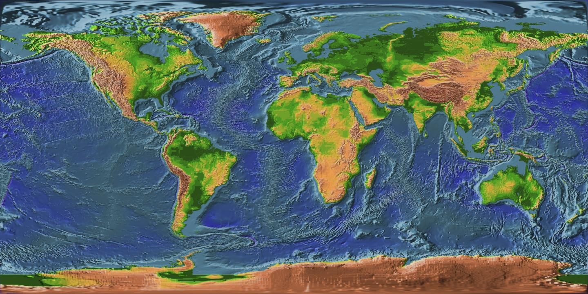
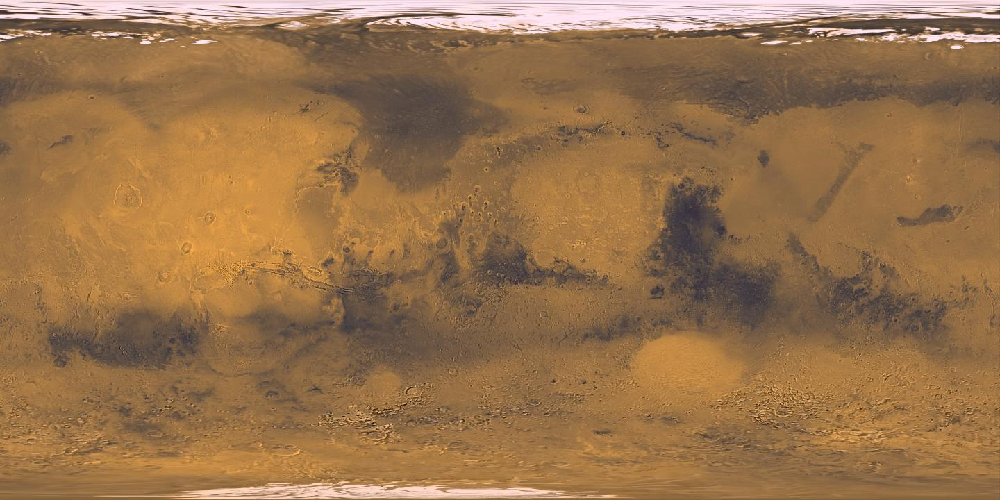
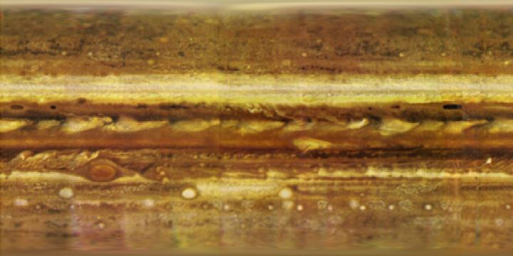

AR and Visual Modes
Place space scenes in your room when AR is available, or use the full non-AR visual mode on every supported platform.
NASA-backed visuals. AR-ready exploration.
Explore planets, moons, satellites, and other celestial bodies with interactive facts, orbit playback, object mode, and Astronomy Picture of the Day.
Luna turns the solar system into a hands-on scene, with controls for scale, motion, and detail.
Place space scenes in your room when AR is available, or use the full non-AR visual mode on every supported platform.
Watch bodies move through orbit with labels, orbit guides, and speed controls that make motion readable.
Open a body on its own, rotate it, inspect its surface, and focus on one world or spacecraft at a time.
The app loads its space library from structured JSON, keeping facts, tags, model names, and orbit data easy to expand.
Compare radius, distance, gravity, orbital period, rotation period, axial tilt, related bodies, and overview notes.
Bring NASA APOD into Luna with the daily image, title, date, explanation, and attribution alongside the exploration tools.
Screenshots
Drop screenshots into the named folders and these placeholders will become a left-to-right gallery.
Suggested extras: APOD, object mode, scaling controls, settings, and NASA credits.
NASA-backed assets
Luna uses NASA/JPL and NASA Scientific Visualization Studio imagery, NASA 3D assets, and a bundled credits catalog so the source trail stays visible.
The catalog is not only planets. It includes moons, satellites, and other bodies, giving the app room to grow beyond the usual solar-system tour.
NASA assets are credited in Luna. Luna is an independent app and is not endorsed by NASA.




Daily discovery
Luna includes APOD as a daily window into the wider universe, pairing NASA imagery or video with context you can read before jumping back into the interactive catalog.
A few highlights from the same style of catalog data Luna uses in the app.
Join the TestFlight now. The App Store link can drop in here later without changing the site structure.
Join TestFlight